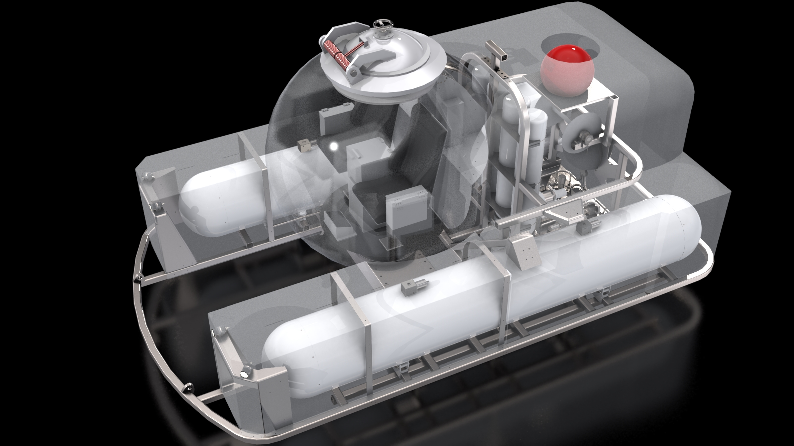

Submersible Ballast System
Mechanical Engineering Capstone Project
 Last Updated: August 14 2022
Last Updated: August 14 2022
The Project
For our engineering capstone project, our group was tasked with designing a ballast system for a manned submersible that would allow the craft to dive to depths of up to 1000m.
Design of the vessel was broken up into two teams, with one team managing the design of the sub's frame and passenger cabin, and our team, tasked with designing the sub's ballast system. Working with another team proved to be a very valuable learning experience. Early attempts at integrating the design of the ballast system with the sub's frame resulted in severe weight and balance issues that had to be resolved through several meetings. At the end, the sub met or exceeded all of the design requirements. Looking back, I'm proud of the design our team came up with.
Design Requirements
The project design requirements consisted of the following:
- The submarine must be capable of withstanding dives of up to 1000m in depth
- Main ballast tanks used for surfacing the sub must be capable of generating 2200kg of buoyant force
- Variable ballast tanks used for pitch trim and deptch control must provide a maximum of 50kg of buoyancy
- The sub must contain a drop weight mechanism for emergency deballasting
Proposed Design
The Main Ballast System

Two cyllindrical main ballast tanks (MBTs) on either side of the passenger cabin enable the submarine to surface above the water, and give it enough buoyancy so that passengers can safely enter and exit the cabin.
The main ballast tanks are fed by four compressed air bottles located behind the passenger compartment.
Deballasting (flooding the main ballast tanks) is accomplished by four solenoid-controlled valves - two on top of each MBT. When opened, the weight of the submarine forces water to displace the air inside the MBTs, putting the sub in a neutrally buoyant state and ready to dive.
The Variable Ballast System

The variable ballast system allows for both pitch trim, and fine buoyancy control of the submarine. It consists of two forward variable ballast tanks (VBTs) located behind the forward dome of each MBT, and one rear VBT - located behind the passenger cabin.
Designing the variable ballast system to allow for both depth control and pitch control was perhaps the most challenging part of the project.

Located behind the passenger compartment, the valve panel houses the electric motor, pump, seawater intake, and all of the plumbing and solenoid valves needed to accomplish both pitch-trim control and depth-control of the submarine.
The variable ballast system is explained in-depth in our team's video presentation, as well as in our full project report.
Emergency Dropweights

Two dropweights - one below each MBT - contain the bulk of the submarine's batteries as well as additional lead weights.
In the event of an emergency, or complete loss of power, solenoid actuators holding the dropweights in place via pins retract, allowing the dropweights to be jettisoned. This places the submarine into a positively buoyant state, even in the event that all VBTs and MBTs are completely flooded with water.
Parametrization
In order to allow for rapid reconfiguring of the ballast system design, a MATLAB GUI was created, which allows the user to quickly generate Solidworks part files given a range of inputs:
- Minimum desired freeboard affects the radius of the MBTs
- Maximum operating depth affects the thickness of the MBTs and VBTs, as well as the number of air bottles needed
- Water temperature and salinity affects the size of the dropweights needed for the sub to remain neutrally buoyant
- Desired ascent and descent speeds affect the maximum ballast capacity of the VBTs

Presentation Video and Project Report
Contact

Thanks for visiting! Please feel free to reach out! I would be happy to answer any questions or inquiries you may have.